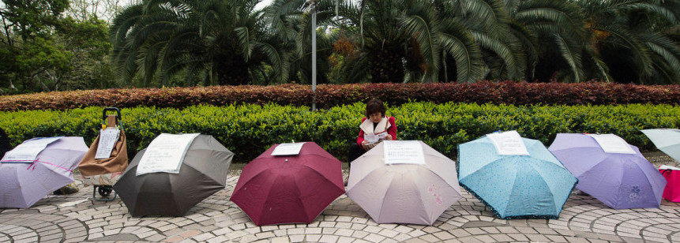
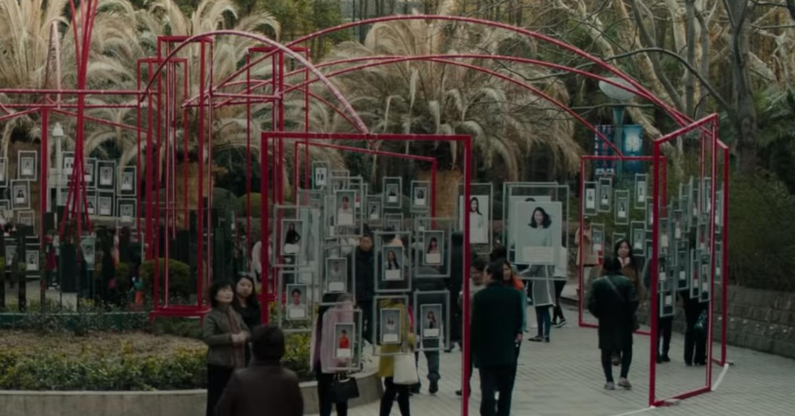
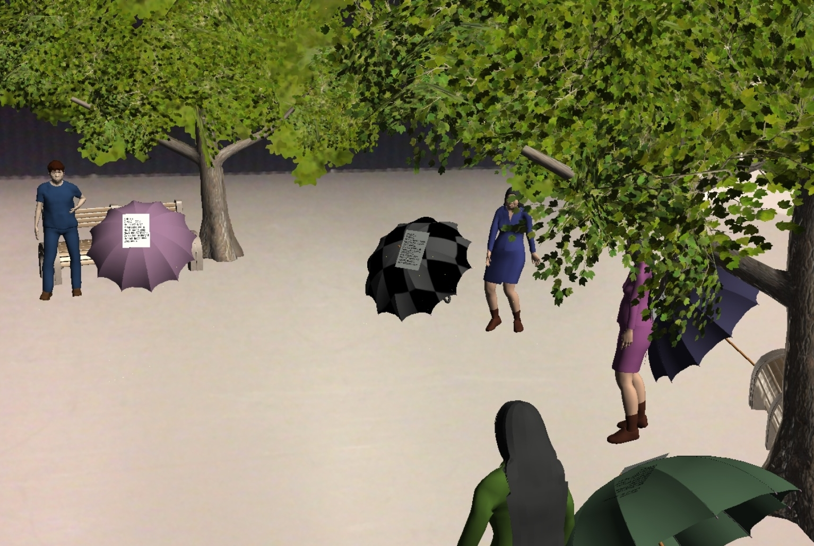

Perfect Match
Perfect Match is an augmented reality application on the marriage market in People’s Park, Shanghai. This application was created to increase awareness about the marriage traditions in China as well as to highlight the need to include the young singles in the partner selection process.
Collaborated With: Yaming Xu
My Role: Game Design | AR Development | User Testing | Audio Recording
Toolkit: Unity 3D | Adobe Audition | Arkit | XCode
Background
Shanghai’s People’s Park Marriage Market, is a meeting location for parents to find suitable marriage partners for their children. Basic statistical information of the children are printed on papers, which are then hung on a wire for display. The papers mostly include information about the children’s age, height, weight, income etc. Some posters also have pictures of the singles; however, none of the posters convey the thoughts and life stories of these people who are put up for marriage. Moreover, these singles often don’t even know that their parents regularly visit such marriage markets in search of a suitable partner for them.

Inspiration
This project is inspired by SK-II, a beauty and skincare brand, that released an advertisement about the social issue of “leftover woman” (剩女). This advertisement highlights the issue of women being considered as “leftover” in society if they are still not married by their late twenties. The advertisement portrays the true feelings of these women regarding this issue of being “leftover” by having their opinions displayed on posters in a marriage market to show their parents that they are happy to be single and feel empowered in their current situations. Similar to this advertisement, through our project, we hope to convey the opinions of the singles in the marriage market to the Shanghai community.

Why AR?
We decided to design the experience in an AR game format to allow players to actively take part in the marriage market, try to find a virtual partner for themselves and in the process, get a better understanding of the complete experience through the perspective of the singles.
Research and Data Colletion
The research at the marriage market involved speaking to parents, grandparents, singles, local visitors and foreign tourists. We found that some of the people were uncomfortable speaking about the marriage market and in times when we were unable to speak directly to our research subjects, we decided to conduct ethnographic research and gathered data through observations.
Research Findings
- Singles did not know that their parents visited the marriage market to find a partner for them
- Singles wanted to find partners on their own and did not want their parents to take charge of the process
- Parents placed high value on information like a house, weight, height etc while singles looked more for people with similar interests and a compatible personality
Ideation
- To highlight the value placed on demographic information by parents in the marriage market, we decided to include a “create your profile” page in our game in which the player has to choose different qualities for themselves. In this part they are limited by the number of “desirable” qualities that they can choose because each quality comes with points and the player can only choose qualities that add up to a total of 100 points.
- In order to represent the opinions of both parents and singles, we recorded audio dialogues based on the conversations that we had heard at the actual marriage market. These audios played as background noise in the virtual marriage market to give the player an understanding of the different opinions about the market.
- To highlight the idea of the singles being excluded from the partner selection process, we included an ending to the game with the player talking to the virtual single that they had chosen through the marriage market. In this call, they are told by the single that the person was never informed by their parents of being involved in the marriage market and were not interested.

Significance
This project allowed us to bring awareness to a social issue using a new technological medium. Moreover, as Interactive Media majors, we are constantly learning about new technologies and their applications; however, through this project we were able to give our work a deeper meaning by using our acquired knowledge in effective ways to better understand and help bring awareness to a community issue around us.